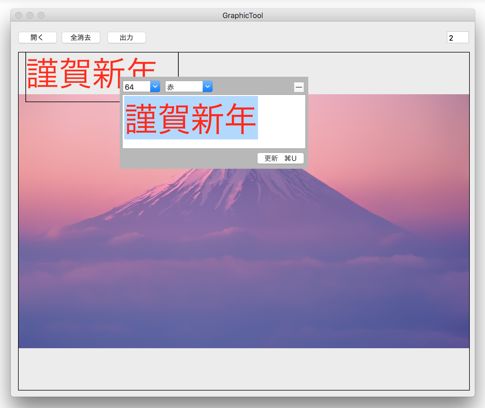
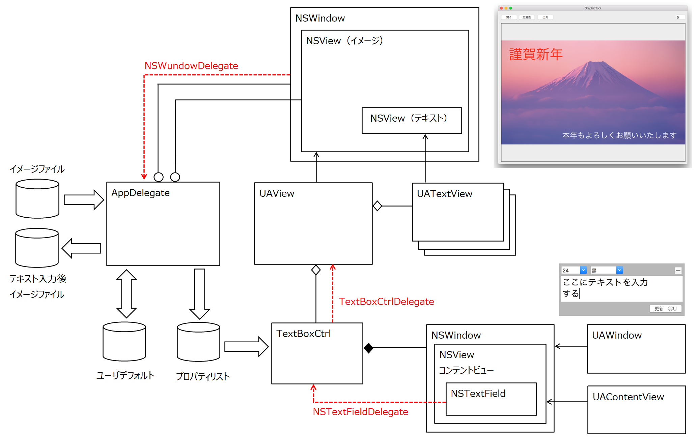

イメージの上にテキストを書き込む

画像をクリックすると動画になります。
イメージファイルを開く
オープンパネルで指定したイメージファイルを読み込み画面に表示する。イメージのサイズは800x600ピクセルの大きさに変換する。縦横比を維持するためサイズによって上下または左右に余白が生じる。
テキストを書き込む
マウスのドラッグでテキストを入力する矩形領域を指定し、そこをクリックすると入力用のサブウィンドウが開く。文字列を入力し更新ボタンをクリックする。同時にフォントサイズ、テキストの色を指定することができる。
テキストを入力した矩形領域をドラッグすることにより、表示位置を移動したり、表示領域を拡大縮小したりする。
テキストを書き込む仕組み
テキストは、テキストを描画したビューオブジェクトである。テキストを入して更新ボタンをクリックした時点でビュー（UAView）を生成し、親ビューに貼りつける。ビューのframeプロパティを変えることにより、テキストの表示位置や表示域の大きさ変えることができる。テキストのフォントサイズとテキストカラーをユーザが指定して変えることができるようビューのプロパティにそれらを保持する。
ファイルに出力する
ビューに表示中のテキストを含んだイメージをPNG形式のファイルに出力する。ファイルのサイズはビューの大きさと同じ 800x600 となる。
クラス構造図

GitHub